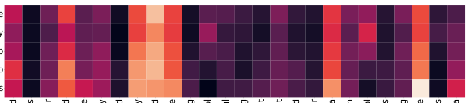
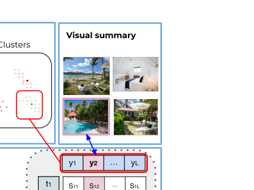

Tell Me What Is Good About This Property: Leveraging Reviews For Segment-Personalized Image Collection Summarization (从评论中挖掘房源卖点：面向用户细分的图库个性化摘要)
- 会议/期刊: AAAI 2024 (IAAI track)
- 作者与机构: Monika Wysoczańska (Warsaw University of Technology)、Moran Beladev 等 (Booking.com)
- 推荐链路定位: 展示素材选择（图库摘要，位于召回/展示前的离线内容生产环节）
- 研究方向: 多模态推荐与内容理解
- 论文原文: 论文原文链接
- 开源代码: KMedoids 依赖实现（本文自研部分暂未开源）
TL;DR (1分钟核心速览)
Booking.com 房源图库动辄数百张，用户难以快速定位与自己出行意图相关的视觉内容。本文提出 CrossSummarizer：MuMIC 多标签 CLIP 抽图像表征并按细分过滤，KMedoids 聚类保多样性，Text2Topic 从评论抽主题，用 \(S_{ij}=\sigma(\exp(\gamma)\langle t_i,y_j\rangle)\)跨模态匹配后按簇贪心选 Top-K。6000+ 真实房源、K=9 离线评测中 Coverage 较无个性化基线最高提升 25.5%，人类成对评测 0.66 vs 0.34（\(p<5\times10^{-8}\)）。
Background & Motivation (背景与核心矛盾)
- 主流范式: 图库摘要（image collection summarization）主流是子模最大化或聚类选代表，目标为「多样性 + 代表性」的基础稀释；近期出现 guided summarization（Kothawade et al. 2022），按显式 query 选图。
- 前人局限: 其一，通用摘要不做个性化，同一房源对 Couple 与 Family 应展示完全不同的图；其二，guided 摘要依赖显式 query，而「我想找个能带娃放空的雪场酒店」这类意图无法转写成检索式 query，且人工标注个性化 ground-truth 成本极高。
- 核心洞察 (Key Insight): 评论是天然的零标注个性化信号。图 1 热力图显示，不同细分用户提及主题的排序差异显著——Family 高频出现 kids pool / babysitting，Couple 更关注 wine/champagne / spa，Business 关注 parking / private check-in，因此「细分评论主题分布」可充当隐式 query。
- 本文切入点: 把个性化摘要等价为「文本引导的图像子集选择」，在统一多模态空间中让评论主题去挑图，全流程无监督、无人工标注。

Method (核心方法设计)
1. 整体框架 (Overall Architecture)
输入为房源图库 \(G\)与按细分\(u\)切片的评论文本。三阶段闭环：(a) MuMIC 同时输出图像 embedding\(y_i\in\mathbb{R}^D\)与多标签类别集合\(C\)，仅保留含\(c\in C_u\)（细分相关类）的图；(b) 对过滤后表征做余弦 KMedoids 聚类得到\(K\)簇；(c) Text2Topic 在细分\(u\)的评论上检出主题集\(T_u\)，计算置信矩阵\(S\)后在每个簇内贪心取 argmax、且一个主题只用一次，最终输出\(K\) 张图。全流程离线批量预计算写入特征库存，线上仅读表。
flowchart TD
A["房源图库 G + 细分 u 的评论"] --> B["MuMIC 多标签图文编码"]
B --> C["按 C_u 过滤 + KMedoids 聚类"]
A --> D["Text2Topic 检出主题 T_u"]
C --> E["置信矩阵 S 簇内贪心选图"]
D --> E
E --> F["K 张个性化摘要图"]
2. 关键设计拆解 (Key Designs)
- 多标签跨模态表征 MuMIC（解决 CLIP 单标签 softmax 无法表达「一图多卖点」）: CLIP 的 InfoNCE 强制一图对唯一文本，但房源图常同时含「大床 + 泳池 + 海景」。MuMIC 对每个候选类独立做 tempered sigmoid BCE：\(\ell_{\text{BCE}}=-\frac{1}{N|C|}\sum_{i}\sum_{j}\left(p_j\hat{w}_{ij}\log\sigma(w_{ij})+(1-\hat{w}_{ij})\log(1-\sigma(w_{ij}))\right)\)，其中\(w_{ij}\)为图像\(x_i\)与类文本\(j\)的余弦 logit，\(p_j\)为类\(j\)的正样本权重（抬高假阴性惩罚）。由此同一\(y_i\) 可同时对多个主题高分，是后续「一主题挑一图」可行性的前提。
- 簇内贪心主题匹配（解决「纯视觉聚类丢个性化」与「纯主题选择丢多样性」的两难）: 若全局按主题 argmax 选 Top-K（TopicBased），会反复选同类特写导致 Div/Repr 崩塌；若只取簇心（Clust-W/P），则完全无视细分意图。CrossSummarizer 用 \(S_{ij}=\sigma(\exp(\gamma)\cdot\langle t_i,y_j\rangle)\)度量主题-图像对齐，并在每个 KMedoids 簇内独立取\(\arg\max_{(i,j)\in\Omega_T\times\Omega_k}S_{ij}\) 后剔除已用主题，等价于「每簇必须贡献一张、且贡献的是该细分最关心的方面」，从而硬性保住簇间多样性。
- 训练目标、负采样与推理效率: 全程无监督，仅两处训练——MuMIC 的 BCE 与 Text2Topic 的 BCE（15,663 条正 (review, topic) 对 + 每对 5 个负主题，cross-encoder BERT 取 [CLS] 过 sigmoid，阈值 0.5）。选择阶段无需负采样打分，仅一次前向 + 一次 KMedoids；实测 GPU 上 MuMIC 处理 100 图约 170 ms、Text2Topic 处理 100 评论约 244 ms。
Experimental Setup & Evaluation Protocol (实验设置与评估协议)
- 数据集与预处理: 从 Booking.com 全站按国家、住宿类型、评分分层抽样 6000+ 真实房源，按图库/评论规模切两档：
| 数据集 | #Properties | #Images | #Reviews | 规模划分 | 说明 |
|---|---|---|---|---|---|
| Small | 3,230 | 232,560 | 251,943 | 图 50–100 张 / 评论 30–150 条 | 中小房源 |
| Big | 3,151 | 457,946 | 1,504,024 | 图 >100 张 / 评论 >150 条 | 大型房源 |
- 数据划分与防穿越: 无用户级划分，采用离线全量评测（每个房源独立成样本），不存在时序穿越；评测在细分级别分层汇总。需注意这并非标准训练/测试切分，模型（MuMIC、Text2Topic）在站内全量数据上预训练后被直接用于评测样本。
- 排名评测协议: 非检索式排名，而是集合级摘要质量指标（\(K=9\)固定，对齐线上 Booking.com 展示位）：Diversity\(\text{Div}=\frac{\max_{x_i,x_j\in G_s}d(x_i,x_j)}{\max_{x_l,x_m\in G}d(x_l,x_m)}\)、Representativeness\(\text{Repr}=\text{CosSim}(\mu_{G},\mu_{G_s})\)、Coverage\(\text{Cov}=\frac{1}{|C_u|}\sum_{c\in C_u}\frac{P_{G_s}(c)}{P_G(c)}\)、Reviews Coverage\(\text{RCov}=\frac{1}{|T_u|}\sum_{i}\frac{\max_{j\in\Omega_{G_s}}S_{ij}}{\max_{j\in\Omega}S_{ij}}\)。
- 对比基线与超参: 仅 3 个自实现基线——Default Clustering（无个性化簇心）、Clust-W/P（细分过滤 + 簇心）、TopicBased（纯主题全局 Top-K）；KMedoids 固定随机种子，主题数 45、阈值 0.5；人类评估为 210 样本、5 名标注者的成对盲测（tie 记 0.5），配对 t 检验。
Key Experimental Results (实验关键数据)
1. 主实验对比 (Main Results)
| 方法 | Small Div↑ | Small Repr↑ | Small Cov↑ | Small RCov↑ | Big Div↑ | Big Repr↑ | Big Cov↑ | Big RCov↑ |
|---|---|---|---|---|---|---|---|---|
| Default Clustering | 0.947 | 0.931 | 0.516 | 0.581 | 0.925 | 0.929 | 0.430 | 0.488 |
| Clustering w/ Personalization | 0.903 | 0.931 | 0.578 | 0.656 | 0.932 | 0.928 | 0.487 | 0.521 |
| Topic-Based Personalization | 0.903 | 0.733 | 0.365 | 0.649 | 0.874 | 0.775 | 0.261 | 0.707 |
| CrossSummarizer (Ours) | 0.963 | 0.903 | 0.617 | 0.729 | 0.950 | 0.885 | 0.524 | 0.677 |
| Improv. (vs Clust-W/P) | +6.6% | −3.0% | +6.7% | +11.1% | +1.9% | −4.6% | +7.6% | +30.0% |
人类成对评测：CrossSummarizer 均分 \(0.66\pm0.38\)vs Clust-W/P\(0.34\pm0.38\)，配对 t 检验\(t(209)=-5.537\)，\(p<5\times10^{-8}\)；仅 Business 细分未占优。
2. 消融实验 (Ablation Study)
论文未单列消融表，但三个基线本身构成「逐模块增删」的等价消融（Small split）：
| 配置 | Div | Repr | Cov | RCov |
|---|---|---|---|---|
| 无个性化聚类（移除细分过滤 + 主题） | 0.947 | 0.931 | 0.516 | 0.581 |
| + 细分类别过滤（移除主题匹配） | 0.903 | 0.931 | 0.578 | 0.656 |
| + 主题匹配、移除聚类（纯文本驱动） | 0.903 | 0.733 | 0.365 | 0.649 |
| 完整 CrossSummarizer（两者兼得） | 0.963 | 0.903 | 0.617 | 0.729 |
3. 关键实验发现 (Key Findings)
- 细分类别过滤是 Coverage 的主引擎，且几乎零代价: Small 上 \(0.516\to0.578\)（+12.0%）、Big 上\(0.430\to0.487\)（+13.3%），而 Repr 完全没变（0.931→0.931），说明 MuMIC 的类映射只剔除与细分无关的图（如 Business 房源删掉的儿童设施图），不扰动整体表征分布。
- 纯文本驱动把 RCov 顶到最高却牺牲了视觉覆盖面: TopicBased 在 Big 上 RCov 0.707 最高（因为该指标分子正是它直接优化的量），但 Repr 从 0.929 崩到 0.775、Cov 从 0.487 掉到 0.261；CrossSummarizer 用聚类硬约束把 Repr 拉回 0.885、Cov 拉到 0.524，仅让出 0.030 的 RCov，是全局最优折中。
- Div–Repr 存在明确 tradeoff，本文踩在甜点上: 最高 Div（0.963 / 0.950）来自「每簇一图 + 过滤同质房型图」的双重硬约束；Repr 相对最优值仅降 2–5 个百分点，而人类评估证明用户更认可这种偏置（0.66 vs 0.34，\(p<10^{-7}\)），即视觉代表性略降换来的个性化收益被真实用户感知到。
Highlights & Limitations (亮点、对比与审稿批判)
- 与代表作对比: 相对 Tschiatschek et al. 2014 / Kothawade et al. 2022 的通用或 guided 摘要，本文首次把个性化落到用户细分级且用评论主题替代显式 query，彻底免标注；相对 CLIP 零样本匹配，MuMIC 的多标签 BCE 允许「一图对多主题」，这是能在一簇内做主题竞争的结构性前提。
- 可迁移亮点: (1) 「聚类硬约束 + 跨模态主题打分」的组合可直接搬到电商商品主图优选、短视频封面选帧，兼顾多样性与意图对齐；(2) 用「评论主题分布的细分间差异」作为无需用户 ID 的个性化信号，对冷启动场景（无行为日志、仅有文本）尤其友好。
- 审稿级局限批判: (1) 评测外部效度弱——数据集与自研模型均不公开，仅复用第三方 KMedoids，且核心指标 Cov/RCov 的分子与方法的优化目标同源，存在「指标迎合自身损失」的风险；线上 CTR A/B 尚未完成（作者自述 under experimentation），工业收益未被证实。(2) 细分粒度粗（5×5 类型），对新房源或评论稀疏样本存在冷启动，作者仅提出「借相似房源迁移」的设想而未验证；\(K=9\)、主题数 45、阈值 0.5 均固定，缺超参敏感性分析。
Rating (四维评分)
- 方法创新性 (Novelty): ⭐⭐⭐ （把「细分个性化图库摘要」形式化为无监督文本引导子集选择，任务定义有新意；但方法论是 MuMIC + KMedoids + Text2Topic 的工程组合，缺少新学习范式或理论分析）
- 评估协议与实验扎实度 (Protocol & Experiments): ⭐⭐⭐ （6000+ 真实房源、两档规模分层、4 个自定义指标 + 210 样本人类成对评测与 t 检验较完整；但仅 3 个基线、无线上 A/B、指标与优化目标同源）
- 写作与数学规范度 (Clarity & Rigor): ⭐⭐⭐⭐ （算法伪代码与四个指标定义清楚，MuMIC/Text2Topic 均给出公式与训练细节；\(w_{ij}\)与\(p_j\) 的符号在正文略简，需回查原文献）
- 工业落地与复现价值 (Industrial & Practical Value): ⭐⭐⭐⭐ （已落地 Booking.com CIP/Flink 流式流水线，离线预计算 + 线上零额外延迟，窗口聚合设计有工程参考价值；但数据与自研模型未开源，复现门槛高）